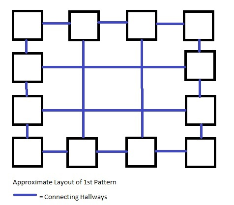
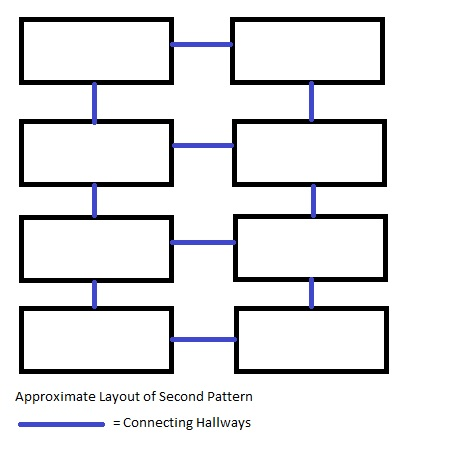
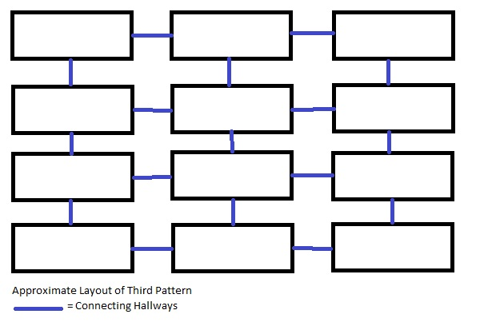
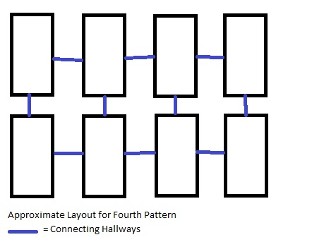

v1.00: Initial Upload
The information in the following table is taken from this Touhou Wiki page
| Title | 不思議の幻想郷２～ミラクル☆パーティー |
|---|---|
| Developer | AQUASTYLE |
| Publisher | AQUASTYLE |
| Release Date | 30 December 2011 (Comiket 81) |
| Genre | Roguelike |
| Gameplay | Single Player Story |
| Platform | Windows[1] |
'tis the season of the roguelikes / fa la la la la, la la la la!
Yes, roguelikes are coming back, people, heralded by "FTL -Faster Than Light-".
Now I haven't played it personally, but since it's returning, I feel as if I have to make a guide for a roguelike I like.
My personal history with roguelikes started with Chocobo's Mysterious Dungeon 2 for the PS1. Back then, I didn't really know what I was supposed to do.
However, after learning a bit about its mechanics and with a little bit of luck, I managed to defeat its final boss.
Since then, though, I didn't play any roguelikes. Mainly because there's a drought of it for the consoles.
I mean, the second roguelike I played was the Doom Roguelike that's a bit like Dwarf Fortress. I didn't finish it.
I came to like Touhou Project back in around 2005, and since then I've been searching for good fangames.
Long story short, I first discovered "Motto! Fushigi no Gensokyo ~Under The Moonlight~", then "Fushigi no Gensokyo 2: Miracle Party".
I like FnG2 more because it's more newbie-friendly.
Anyway... this guide will be based on my own experience playing in version 1.56, and assumes you already know the basic movements.
You can fill in the gaps with Google Translate and this wiki.
How to get it:
[1]: One may be able to play it in Linux using WINE, but specific configurations may be required.
Assume that 'O' is the player and 'X' is the target enemy.
If you don't want your target enemy to hit you before you can hit them, make sure the space between you and that enemy is of even numbers.
Turn 1: [O][ ][ ][X] O moves right, X responds by moving left.
Turn 2: [ ][O][X][ ]
That way, you can attack first. However, if the space between you and that enemy is of odd numbers...
Turn 1: [O][ ][X] O moves right, but X doesn't move.
Turn 2: [ ][O][X]
The enemy attacks first.
However, if you strafe to the enemy's right...
Turn 1:
[O][ ][X]
[ ][ ][ ]
O moves down, X responds by moving diagonally down left.
Turn 2:
[ ][ ][ ]
[O][X][ ]
You can still attack first.
If your enemy has a ranged attack with long range like Eirin, strafe to her left and right to bring her closer. Then strike.
Turn 1:
[O][ ][ ][ ][ ][ ][X]
[ ][ ][ ][ ][ ][ ][ ]
Turn 2:
[ ][ ][ ][ ][ ][ ][ ]
[ ][O][ ][ ][ ][X][ ]
Turn 3:
[ ][ ][O][ ][X][ ][ ]
[ ][ ][ ][ ][ ][ ][ ]
Turn 4:
[ ][ ][ ][ ][ ][ ][ ]
[ ][ ][O][X][ ][ ][ ]
Moving towards Eirin is optional, but it reduces the number of turns.
Same goes for Suika who has a 2-square attack.
As with all roguelikes, there WILL be times where the map/AI director acts like a bitch.
Like spawning you in a no-win situation like inside a 百鬼夜行 (Monster House) of some sort, with monsters of a higher rank than you can handle.
If that happens?
ALT-F4.
YES. You saw that right. Unlike the previous game, there is NO CONSEQUENCE FOR IT HERE.
By doing it, you prevent the game from auto-saving.
When you restart the game, it loads the state you begin with when you started the previous time.
So you can try new strategies this time around.
Through my hours of playing, I've identified a few room patterns that seem to pop up every now and then.
Granted, the connecting hallways will not always be straight and have a few bends.




There are two ways to identify items: with special tools (detailed right below), or heuristically (IIRC it means 'through experience').
You're going to NEED 識別「Ｇ〇〇ｇｌｅ」 (Identification "G**gle") and 識別のスキマ.
If you don't have those, I have some tips for trial-and-error identification:
There will be shop areas in dungeons.
Before you shop, make sure you check for displacement traps so that they won't force you out with items you brought.
REFRAIN FROM USING SPELLCARDS WHEN YOU HAVE A SHOP AREA!!
Normally, 1000 turns.
There is a special dungeon where you can only stay for 500, though.
In the normal case, you'll be given a warning at 800 turns, and if you insist on staying until 1000 turns have passed...
You lose all the items you don't have equipped.
Speaking of the number of turns...
The magnitude of the stamina you have is depicted right under your HP bar.
This, however, is MUCH MORE IMPORTANT THAN THE HP.
You know why I say that? Because if your stamina reaches 0, your HP decreases by 1 per turn.
THAT SHUTS DOWN DUNGEON RUNS IF YOU DON'T HAVE OTHER HEALING MECHANISMS. Either because there's no Minoriko that converts items to food
Or the map manager being a bitchass by spawning no drinks or food items for NINETY NINE FLOORS STRAIGHT.
Replenish stamina by food items, most of which are waffles... except for the Yamame Sundae, a sundae MADE OUT OF CANDIES.
NOTE: This is from what I understood!! Correct me if I'm wrong!
The time is after the events of Fushigi no Gensokyo.
It starts with Kanako Yasaka and Suwako Moriya, the deities of Moriya Shrine, fighting over Suwako eating Kanako's pudding.
After stopping that fight, Sanae Kochiya expresses her desire to hold a feast in Moriya Shrine in celebration of the resolution of the dungeon incident.
She also wants to give Reimu a token of appreciation for resolving it.
Routes 2 to 5 is thus a preparation for that feast.
Sanae travels to Koumakyo, the Scarlet Devil Mansion, to ask Hong Meiling (a.k.a. China) to cook for the feast.
Sanae travels to Hakurei Shrine to ask Yukari for the special chili sauce to be used in the food.
Sanae, with Kanako, travels to the Tengu base in Youkai Mountain to ask Aya Shameimaru to advertise the feast.
Sanae, with Suwako, travels to Kourindou to ask Rinnosuke for something. What that something is, I don't know yet.
Things heat up when it was discovered that someone stole the present intended for Reimu.
Clearing Route 6 opens up Routes 7 to 12.
Sanae receives a letter stating that Hieda no Akyuu has been kidnapped, so she travels with Reimu to the supposed location where she's being held.
SPOILERS BELOW
Sanae responds to a challenge letter by Cirno who 'aims to be the strongest'. The letter was delivered by Tewi Inaba.
SPOILERS BELOW
Sanae responds to Rinnosuke asking her to investigate strange noises originating from where the Kappa live.
SPOILERS BELOW
Sanae intended to return Utsuho's Control Rod/Handcannon to her, but ended up forging a friendship with a certain spider youkai.
SPOILERS BELOW
Seiyuu: Madoka Yonezawa - Ui Hirasawa(K-ON!)
Wishlist Seiyuu: Aya Uchida - Kotori Minami (Love Live!)
The main character.
Recently relocated to Gensokyo,
Seiyuu: Yukana - Tear Grants (Tales of the Abyss), Cecilia Alcott (Infinite Stratos)
Wishlist Seiyuu: Pile - Maki Nishikino (Love Live!)
Recently relocated to Gensokyo,
Seiyuu: Omi Minami - Satsuki Yumizuka (Carnival Phantasm)
Wishlist Seiyuu: Sora Tokui - Nico Yazawa (Love Live!)
Recently relocated to Gensokyo,
Seiyuu: Youko Hikasa - Mio Akiyama (K-ON!)
Wishlist Seiyuu: None. She's fine as she is.
The resident witch, and frequently steals books from Voile, the Magic Library.
Seiyuu: ???
Wishlist Seiyuu: Yurika Kubo - Hanayo Koizumi (Love Live!)
The gate guard of the Scarlet Devil Mansion, and Sanae wants her to cook Chinese food for the feast. For some reason.
Seiyuu: ???
Wishlist Seiyuu: Miyuki Sawashiro - Sakuya Izayoi (Koumajou Densetsu)
Head maid of the Scarlet Devil Mansion. Good at cooking. Her power is of TIME MANIPULATION. Also loves throwing KNIVES.
Seiyuu: ???
Wishlist Seiyuu: Yoshino Nanjou - Eri Ayase (Love Live!), Kokoro Akechi (Tantei Opera Milky Holmes)
The gap Youkai that practically OWNS Gensoukyou. Sanae goes to her for the special chili sauce.
Seiyuu: ???
Wishlist Seiyuu: Aina Kusuda - Nozomi Toujou (Love Live!)
The shrine maiden of Hakurei Shrine, and the go-to person for incidents.
Seiyuu: ???
Wishlist Seiyuu: Emi Nitta - Honoka Kousaka (Love Live!)
The Tengu representative plus crazy reporter, whose newspaper, the Bunbunmaru Shinbun, is more like a tabloid than a journalistic product.
LOL.
Seiyuu: ???
Wishlist Seiyuu: Kenji Akabane - Producer (iDOLM@STER Anime)
The owner of the shop Kourindou which deals with things from the outside world.
Seiyuu: ???
Wishlist Seiyuu: Suzuko Mimori - Umi Sonoda (Love Live!)
The celestial that caused earthquakes in Gensoukyou back in Touhou 10.5
Seiyuu: ???
Wishlist Seiyuu: Yurika Kubo - Hanayo Koizumi (Love Live!)
Gensoukyou's chronicler. She doesn't live long, however, and inherits memories from her ancestors.
Seiyuu: ???
Wishlist Seiyuu: ???
The prankster earth rabbit who delivers Cirno's challenge letter...
Seiyuu: ???
Wishlist Seiyuu: ???
An ice fairy who wants to be the strongest. Unfortunately, she's quite an idiot.
Seiyuu: ???
Wishlist Seiyuu: ???
Gensoukyou's technician and technophile. She's the one who made the Rinnosuke Robots.
Seiyuu: ???
Wishlist Seiyuu: Manami Numakura (Hibiki Ganaha - iDOLM@STER)
Referenced at the beginning of Route 11, where Sanae has to return Utsuho's Handcannon.
Seiyuu: ???
Wishlist Seiyuu: ???
The Spider Youkai Sanae meets when she was returning Utsuho's Handcannon.
Seiyuu: ???
Wishlist Seiyuu: Suzuko Mimori (Love Live!)
The assistant of the resident doctor, Eirin Yagokoro.
Seiyuu: Kaori Mizuhashi - Laharl (Disgaea)
Wishlist Seiyuu: Rie Tanaka - Lacus Clyne (Gundam SEED Destiny), Mirei Saiguuji (CV ~Casting Voice~)
The boss of Nazrin Mountain's Route 6 - Moriya Trial.
These are introduced between v1.00 and v1.33
One thing you need to remember is that the weapons can be upgraded. But NOT IN THE WAY YOU THINK.
You don't upgrade it in a blacksmith or something. You upgrade it using CANDIES. Specifically, ふしぎなアメちゃん (Mysterious Candy / Upgrade Candy)
Using that increases the rank of your weapons by 1.
There's another type of candy called ふしぎなアメちゃん親玉 (Mysterious Candy, King ver. / Revision Candy / Rev Candy)
This increases the base attack of your weapon by 2, then 3, then 4, up to 99 [the process is termed 'Revision']. Make sure you stock lots of this.
You can know the Revision number of the weapon by looking at the icon's 'R a' on the lower side. 'a' = Revision number
強化「荒御魂」 (Strengthening "Rough Honorable Spirit") increases your weapon's attack power too, but this time in the form of +X beside your weapon's name.
X in this case means the number. Up to 99 or whatever limit is set [the limit is increased by Revision Candies]. This goes for ALL weapons.
The maximum attack power for ALL weapons is 98. The number of Rev Candies needed is detailed in the last column of the following tables.
NOTE: Maybe I should use Javascript for this shit...
| Rank | Name | Translation | Base Attack | Initial Bolstering Limit | Initial Properties | Pre-installed Orbs | Revisions to MAX |
|---|---|---|---|---|---|---|---|
| 1 | 木の棒 | Tree Branch | 1 | 99 | NONE | NONE | 99 |
| 2 | おはらい棒 | Cleansing Branch | 1 | 99 | NONE | NONE | 99 |
| 3 | 祓串 | Cleansing Rod | 1 | 99 | NONE | NONE | 99 |
This is the only exception to that rule above. You do NOT expect to spend around 30 Revision Candies on this.
There will NOT be a base attack increase until you spend 99 Revision Candies on it. Even with 98 Revision Candies, the Base Attack is STILL 1.
Only with 99 Revision Candies does the Base Attack increase from 1 to 99. STRAIGHT AWAY.
You CAN use the 強化「荒御魂」 spellcard on this, however, and the limit is already maxed out.
I don't see any use for this weapon except for emergencies, or in some dungeons where Revision Candies are rare.
| Rank | Name | Translation | Base Attack | Initial Bolstering Limit | Initial Properties | Pre-installed Orbs | Revisions to MAX |
|---|---|---|---|---|---|---|---|
| 1 | フランクフルト | Frankfurter | 3 | 30 | NONE | NONE | 34 |
| 2 | ガマの穂 | Ear of Gama | 5 | 30 | NONE | NONE | 32 |
| 3 | かっぱ巻き | Kappamaki | 7 | 30 | NONE | NONE | 30 |
A Nitori-themed weapon.
This is a little better than the one above, due to the number of Revision Candies required to max the base attack.
Again, more suited for emergencies. Also... how does a sausage turn into a plant and then a KAPPAMAKI SUSHI!?
| Rank | Name | Translation | Base Attack | Initial Bolstering Limit | Initial Properties | Pre-installed Orbs | Revisions to MAX |
|---|---|---|---|---|---|---|---|
| 1 | 摩理沙？ | Marisa? | 2 | 30 | NONE | NONE | 34 |
| 2 | ゆっくり摩理沙 | Yukkuri Marisa | 7 | 30 | NONE | NONE | 32 |
| 3 | ゆっくり摩理沙DX | Yukkuri Marisa DX | 10 | 30 | NONE | NONE | 30 |
A Yukkuri-themed weapon.
Placeholder for Weapon Notes.
One WTF weapon for me. I don't think Yukkuris can be used as weapons...
But anyway, this is again suited for emergencies.
| Rank | Name | Translation | Base Attack | Initial Bolstering Limit | Initial Properties | Pre-installed Orbs | Revisions to MAX |
|---|---|---|---|---|---|---|---|
| 1 | チルノ人形 | Cirno Doll | 3 | 30 | NONE | NONE | 34 |
| 2 | 蓬莱人形 | Hourai Doll | 6 | 30 | NONE | NONE | 32 |
| 3 | 首吊り蓬莱人形 | Hanging Hourai Doll | 10 | 30 | NONE | NONE | 30 |
An Alice-themed weapon.
Placeholder for Weapon Notes.
The Rank 3 form is creepy, I'd say.
| Rank | Name | Translation | Base Attack | Initial Bolstering Limit | Initial Properties | Pre-installed Orbs | Revisions to MAX |
|---|---|---|---|---|---|---|---|
| 1 | 忘れ傘 | Forgotten Umbrella | 3 | 20 | NONE | NONE | 34 |
| 2 | から傘 | Karakasa | 6 | 20 | NONE | NONE | 32 |
| 3 | 超撥水「多々良小傘」 | Super Water Repellant "Kogasa Tatara" | 14 | 20 | NONE | NONE | 28 |
A Kogasa-themed weapon.
Placeholder for Weapon Notes.
For emergencies only. This is actually my preferred emergency weapon, what with the 3rd rank of it needing fewer Revision Candies...
| Rank | Name | Translation | Base Attack | Initial Bolstering Limit | Initial Properties | Pre-installed Orbs | Revisions to MAX |
|---|---|---|---|---|---|---|---|
| 1 | 銀のナイフ | Silver Knife | 1 | 30 | NONE | NONE | 35 |
| 2 | マジックスターソード | Magic Star Sword | 7 | 30 | NONE | NONE | 32 |
| 3 | マジックスターランス | Magic Star Lance | 14 | 30 | NONE | NONE | 28 |
A Sakuya-themed weapon.
Placeholder for Weapon Notes.
For emergencies only. My second favorite emergency weapon, however, since the initial Base Attack power is low.
Generally, put in orbs of the same property as the one already existing in the weapon to enhance that property. Maximum of 3 for [何々系特攻] orbs.
Orbs. Will be detailed later.
| Rank | Name | Translation | Base Attack | Initial Bolstering Limit | Initial Properties | Pre-installed Orbs | Revisions to MAX | Image |
|---|---|---|---|---|---|---|---|---|
| 1 | 陰陽ボール | Yin-Yang Ball | 1 | 40 | 妖怪系特攻 Youkai Killer |
妖怪系特攻「妖」 Youkai Killer |
35 | |
| 2 | 陰陽玉 | Yin-Yang Sphere | 5 | 40 | 妖怪系特攻 Youkai Killer |
妖怪系特攻「妖」 Youkai Killer |
33 | |
| 3 | 陰陽鬼神玉 | Yin-Yang Demon Sphere | 7 | 40 | 妖怪系特攻 Youkai Killer |
妖怪系特攻「妖」 Youkai Killer |
32 |
A Reimu-themed weapon.
Placeholder for Weapon Notes.
Now we're talking. Since most of the enemies are Youkai-types, this comes in handy. Make sure you upgrade it as soon as possible, however.
| Rank | Name | Translation | Base Attack | Initial Bolstering Limit | Initial Properties | Pre-installed Orbs | Revisions to MAX |
|---|---|---|---|---|---|---|---|
| 1 | 底抜けひしゃく | Bottomless Dipper | 2 | 30 | 水生系特攻 Water Being Killer |
NONE | 34 |
| 2 | ひしゃく | Dipper | 5 | 30 | 水生系特攻 Water Being Killer |
NONE | 32 |
| 3 | ゴルディオンひしゃく | GOLDION Dipper | 7 | 30 | 水生系特攻 Water Being Killer |
NONE | 30 |
A Murasa-themed weapon.
Placeholder for Weapon Notes.
I don't know about this one... the 水生系特攻 property is kinda useless in this game since the only Water Being is the kappa Nitori...
...and Murasa in PLUS...
...and Senjunamako-tan. I don't even know what she is! Heard she's an original character, AQUASTYLE's mascot...
| Rank | Name | Translation | Base Attack | Initial Bolstering Limit | Initial Properties | Pre-installed Orbs | Revisions to MAX |
|---|---|---|---|---|---|---|---|
| 1 | 文ちゃんうちわ | Aya-chan Fan | 2 | 30 | 浮遊系特攻 Flyer Killer |
浮遊系特攻「浮」 Flyer Killer |
34 |
| 2 | 天狗のうちわ | Tengu Fan | 6 | 30 | 浮遊系特攻 Flyer Killer |
浮遊系特攻「浮」 Flyer Killer |
32 |
| 3 | 芭蕉扇 | Bashou Ougi | 10 | 30 | 浮遊系特攻 Flyer Killer |
浮遊系特攻「浮」 Flyer Killer |
30 |
An Aya-themed weapon.
Placeholder for Weapon Notes.
I called the third form the 'Huge-ass Fan'.
| Rank | Name | Translation | Base Attack | Initial Bolstering Limit | Initial Properties | Pre-installed Orbs | Revisions to MAX |
|---|---|---|---|---|---|---|---|
| 1 | 竹箒 | Bamboo Broom | 2 | 30 | 妖精系特攻 Fairy Killer |
妖精系特攻「精」 Fairy Killer |
34 |
| 2 | 魔法のほうき | Magic Broom | 6 | 30 | 妖精系特攻 Fairy Killer |
妖精系特攻「精」 Fairy Killer |
32 |
| 3 | ブレイジングスター | Blazing Star | 10 | 30 | 妖精系特攻 Fairy Killer |
妖精系特攻「精」 Fairy Killer |
30 |
A Marisa-themed weapon.
Placeholder for Weapon Notes.
I guess Marisa hates fairies.
This is my preferred weapon for Route 8, because of its Fairy Killer property and orb. Though I wish I had the Fire Trap Ofudas back then...
You know, for Boss Cirno.
| Rank | Name | Translation | Base Attack | Initial Bolstering Limit | Initial Properties | Pre-installed Orbs | Revisions to MAX |
|---|---|---|---|---|---|---|---|
| 1 | 卒塔婆 | Stupa | 4 | 30 | 神系特攻 Deity Killer |
神系特攻「神」 Deity Killer |
33 |
| 2 | 悔悟の棒 | Bar of Remorse | 8 | 30 | 神系特攻 Deity Killer |
神系特攻「神」 Deity Killer |
31 |
| 3 | 神は裁き | God's Judgement | 12 | 30 | 神系特攻 Deity Killer |
神系特攻「神」 Deity Killer |
29 |
An Eiki-themed weapon.
Placeholder for Weapon Notes.
If I use this weapon, that means I'm in a bad mood and Hina procs her special TOO FREQUENTLY.
| Rank | Name | Translation | Base Attack | Initial Bolstering Limit | Initial Properties | Pre-installed Orbs | Revisions to MAX |
|---|---|---|---|---|---|---|---|
| 1 | てゐの耳 | Tewi's Ears | 4 | 30 | 耳系特攻 Kemono Killer |
耳系特攻「耳」 Kemono Killer |
33 |
| 2 | うどんげの耳 | Reisen's Ears | 8 | 30 | 耳系特攻 Kemono Killer |
耳系特攻「耳」 Kemono Killer |
31 |
| 3 | ウドンゲスラッシャー | UDONGE SLASHER | 12 | 30 | 耳系特攻 Kemono Killer |
耳系特攻「耳」 Kemono Killer |
29 |
A Tewi/Reisen-themed weapon.
Placeholder for Weapon Notes.
If I use this weapon, I don't want to get the Confused/Berserk status from Udonge and want to destroy her as quickly as possible.
| Rank | Name | Translation | Base Attack | Initial Bolstering Limit | Initial Properties | Pre-installed Orbs | Revisions to MAX |
|---|---|---|---|---|---|---|---|
| 1 | 哨戒天狗の刀 | Patrolling Tengu's Sword | 4 | 20 | 天狗系特攻 Tengu Killer |
NONE | 33 |
| 2 | 白狼刀 | Byakurou-katana Shirookami-gatana? |
8 | 20 | 天狗系特攻 Tengu Killer |
NONE | 31 |
| 3 | 千里眼の大太刀 | Scimitar of Clairvoyance | 13 | 20 | 天狗系特攻 Tengu Killer |
NONE | 29 |
A Momiji-themed weapon. Apparently.
Placeholder for Weapon Notes.
I was only in it for the initial Base Attack.
| Rank | Name | Translation | Base Attack | Initial Bolstering Limit | Initial Properties | Pre-installed Orbs | Revisions to MAX |
|---|---|---|---|---|---|---|---|
| 1 | 融合の足 | The Third Foot | 4 | 30 | 爆発系特攻 Explosion Killer |
爆発系特攻「爆」 Explosion Killer |
33 |
| 2 | 制御棒 | Control Rod | 7 | 30 | 爆発系特攻 Explosion Killer |
爆発系特攻「爆」 Explosion Killer |
32 |
| 3 | 超制御棒 | Improved Control Rod | 15 | 30 | 爆発系特攻 Explosion Killer |
爆発系特攻「爆」 Explosion Killer |
28 |
An Utsuho-themed weapon.
Placeholder for Weapon Notes.
I think this is the third best weapon in the Vanilla version of the game, attack power wise, especially since Utsuho's a normal enemy now.
Also my fourth favorite in the whole game.
| Rank | Name | Translation | Base Attack | Initial Bolstering Limit | Initial Properties | Pre-installed Orbs | Revisions to MAX |
|---|---|---|---|---|---|---|---|
| 1 | 白狼権 | Hakurouken Plain-building Sword |
4 | 30 | 幽霊系特攻 Ghost Killer |
幽霊系特攻「幽」 Ghost Killer |
33 |
| 2 | 楼観権 | Roukanken High-building Sword |
9 | 30 | 幽霊系特攻 Ghost Killer |
幽霊系特攻「幽」 Ghost Killer |
31 |
| 3 | 斬魂刀 | Zankontou Soul-rending Cleaver |
15 | 30 | 幽霊系特攻 Ghost Killer |
幽霊系特攻「幽」 Ghost Killer |
28 |
A Youmu-themed weapon, apparently, because the third weapon's name is something from the manga Bleach.
Placeholder for Weapon Notes.
I think THIS is the best weapon in the Vanilla version of the game.
Generally, put in orbs of the same property as the one already existing in the weapon to enhance that property. Maximum of 3 for [何々系特攻] orbs.
Orbs. Will be detailed later.
| Rank | Name | Translation | Base Attack | Initial Bolstering Limit | Initial Properties | Pre-installed Orbs | Revisions to MAX |
|---|---|---|---|---|---|---|---|
| 1 | 緋の衣 | Scarlet Cloth | 1 | 50 | 貫通 Piercing |
貫通「貫」 Piercing |
35 |
| 2 | 龍魚ドリル | Dragonfish Drill | 3 | 50 | 貫通 Piercing |
貫通「貫」 Piercing |
34 |
| 3 | ギガ龍魚ドリル | GIGA Dragonfish Drill | 5 | 50 | 貫通 Piercing |
貫通「貫」 Piercing |
33 |
An Iku-themed weapon. The name 'Scarlet Cloth' gives it away.
In Touhou 10.5 she does have a move that changes her cloth into a drill.
Placeholder for Weapon Notes.
I prefer fusing this into another weapon.
| Rank | Name | Translation | Base Attack | Initial Bolstering Limit | Initial Properties | Pre-installed Orbs | Revisions to MAX |
|---|---|---|---|---|---|---|---|
| 1 | 草刈り鎌 | Harvester's Scythe | 1 | 50 | 必中 Accuracy |
必中「必」 Accuracy |
35 |
| 2 | 死神の鎌 | Death Goddess's Scythe | 4 | 50 | 必中 Accuracy |
必中「必」 Accuracy |
33 |
| 3 | ツイン死神の鎌 | Twintailed Death Goddess's Scythe | 8 | 50 | 必中 Accuracy |
必中「必」 Accuracy |
31 |
A Komachi-themed weapon.
Placeholder for Weapon Notes.
The Rank 3 form has Komachi sleeping on it... but that's not enough a reason for me to use it as a main weapon.
Again, I prefer fusing this into another weapon.
| Rank | Name | Translation | Base Attack | Initial Bolstering Limit | Initial Properties | Pre-installed Orbs | Revisions to MAX |
|---|---|---|---|---|---|---|---|
| 1 | ゆゆ様うちわ | Yuyu-sama Fan | 3 | 30 | 一撃死 One Shot One Kill |
一撃死「死」 One Shot One Kill |
35 |
| 2 | 幽々子の扇 | Yuyuko's Fan | 5 | 30 | 一撃死 One Shot One Kill |
一撃死「死」 One Shot One Kill |
33 |
| 3 | 扇子オブチェリーブロッサム | Folding Fan/Sense of Cherry Blossom | 9 | 30 | 一撃死 One Shot One Kill |
一撃死「死」 One Shot One Kill |
31 |
A Yuyuko-themed weapon.
Placeholder for Weapon Notes.
The 一撃死 property makes it tempting.
| Rank | Name | Translation | Base Attack | Initial Bolstering Limit | Initial Properties | Pre-installed Orbs | Revisions to MAX |
|---|---|---|---|---|---|---|---|
| 1 | ウリ科の植物 | Gourd Fruit | 2 | 30 | 延長 Melee Range Extension |
延長「延」 Melee Range Extension |
34 |
| 2 | ひょうたん | Gourd | 6 | 30 | 延長 Melee Range Extension |
延長「延」 Melee Range Extension |
32 |
| 3 | 伊吹瓢 | Ibuki Gourd | 9 | 30 | 延長 Melee Range Extension |
延長「延」 Melee Range Extension |
31 |
A Suika-themed weapon.
Placeholder for Weapon Notes.
The 延長 property this time makes it... uh...
I'd rather use it only when I've maxed it up to 198.
| Rank | Name | Translation | Base Attack | Initial Bolstering Limit | Initial Properties | Pre-installed Orbs | Revisions to MAX |
|---|---|---|---|---|---|---|---|
| 1 | 勇気凛々の剣 | Sword of Courage | 2 | 30 | 緋想 Scarlet Perceptions |
NONE | 34 |
| 2 | 緋想の剣 | Sword of Scarlet Perceptions | 6 | 30 | 緋想 Scarlet Perceptions |
NONE | 32 |
| 3 | 全人類の緋想天 | Humanity's Sky of Scarlet Perception | 9 | 30 | 緋想 Scarlet Perceptions |
NONE | 31 |
A Tenshi/Tenko-themed weapon.
The 緋想 property enhances damage up to 120% against Youkai and Flyers, and 130% to Deities, Kemono ears, Explosion-causing enemies, Tengus, and Cirno.
WITHOUT Orbs.
Placeholder for Weapon Notes.
Maybe I should make this my main...
| Rank | Name | Translation | Base Attack | Initial Bolstering Limit | Initial Properties | Pre-installed Orbs | Revisions to MAX |
|---|---|---|---|---|---|---|---|
| 1 | 筆ペン | Caligraphy Brush | 2 | 30 | NONE | NONE | 34 |
| 2 | 阿求の筆 | Akyuu's Brush | 4 | 30 | NONE | NONE | 33 |
| 3 | 阿礼乙女の筆 | Lady Miare's Brush | 15 | 30 | 加虐 x5 Sadism x5 |
NONE | 30 |
An Akyuu-themed weapon.
You say the 3rd Rank form is a brush? I say it's more of a micro-scale, ignited, ICBM turned upside down and used as a weapon!
Placeholder for Weapon Notes.
Not sure if want.
| Rank | Name | Translation | Base Attack | Initial Bolstering Limit | Initial Properties | Pre-installed Orbs | Revisions to MAX |
|---|---|---|---|---|---|---|---|
| 1 | 子供用シャベル | Trowel / Kid's Shovel | 1 | 30 | NONE | 発掘「発」 x3 Digging x3 |
35 |
| 2 | 大型スコップ | Shovel / Big Scoop | 6 | 30 | NONE | 発掘「発」 x3 Digging x3 |
32 |
| 3 | パワーショベル | Bulldozer Arm / Power Shovel | 14 | 30 | NONE | 発掘「発」 x3 Digging x3 |
28 |
A Nazrin-themed weapon.
Useful for digging stuff she finds on the ground, in the form of cracks emitting light.
Placeholder for Weapon Notes.
This is NEVER my main weapon.
| Rank | Name | Translation | Base Attack | Initial Bolstering Limit | Initial Properties | Pre-installed Orbs | Revisions to MAX |
|---|---|---|---|---|---|---|---|
| 1 | グネグネした棒 | Bent Staff | 7 | 10 | 破壊 Destruction |
破壊「破」 Destruction |
33 |
| 2 | 禁忌「レーヴァテイン」 | Forbidden "Laevateinn" | 13 | 10 | 破壊 Destruction |
破壊「破」 Destruction |
29 |
| 3 | フラン人形 | Flandre Doll | 20 | 10 | 破壊 Destruction |
破壊「破」 Destruction |
25 |
A Flandre-themed weapon.
Useful for digging through the walls if there's a secret room in the floor.
Placeholder for Weapon Notes.
This is my second favorite.
Especially with the overkill base attack.
| Rank | Name | Translation | Base Attack | Initial Bolstering Limit | Initial Properties | Pre-installed Orbs | Revisions to MAX |
|---|---|---|---|---|---|---|---|
| 1 | ペンデュラム | Pendulum | 7 | 10 | NONE | NONE | 32 |
| 2 | ダウジングロッド | Dousing Rod | 12 | 10 | NONE | NONE | 29 |
| 3 | ナズーリンロッド | Nazrin Rod | 20 | 10 | 遺失 Lost Things |
NONE | 25 |
A Nazrin-themed weapon.
Placeholder for Weapon Notes.
This is my 3rd favorite
I say 3rd because I only RARELY get 遺失 to proc. Maybe I should put more 遺失 orbs in it?
| Rank | Name | Translation | Base Attack | Initial Bolstering Limit | Initial Properties | Pre-installed Orbs | Revisions to MAX |
|---|---|---|---|---|---|---|---|
| 1 | 妖刀「犬走」 | Demon Sword "Inubashiri" | 10 | 10 | 広範囲攻撃 Wide-Range |
NONE | 30 |
| 2 | 妖刀「犬走・改」 | Demon Sword "Inubashiri Aratame" | 15 | 10 | 広範囲攻撃 Wide-Range |
NONE | 28 |
| 3 | 真・妖刀「犬走」 | Super Demon Sword "Inubashiri" | 20 | 10 | 広範囲攻撃 Wide-Range |
NONE | 25 |
Another Momiji-themed weapon... because of the Inubashiri thing.
Placeholder for Weapon Notes.
This would've been in my favorites list... IF IT WASN'T SO RARE!!!
| Rank | Name | Translation | Base Attack | Initial Bolstering Limit | Initial Properties | Pre-installed Orbs | Revisions to MAX |
|---|---|---|---|---|---|---|---|
| 1 | はたきのようなもの | Something Like a Duster | 15 | 5 | 治癒 Healing |
治癒「治」 Healing |
28 |
| 2 | 奇跡の棒 | Miracle Staff | 20 | 5 | 治癒 Healing |
治癒「治」 Healing |
26 |
| 3 | 奇跡の大幣 | Miracle Lance | 25 | 5 | 治癒 Healing |
治癒「治」 Healing |
23 |
A Sanae-themed weapon...
Placeholder for Weapon Notes.
I HAVE NO IDEA HOW TO GET THIS WEAPON. OR WHERE.
| Rank | Name | Translation | Base Attack | Initial Bolstering Limit | Initial Properties | Pre-installed Orbs | Revisions to MAX |
|---|---|---|---|---|---|---|---|
| 1 | 丸太 | Log | 20 | 5 | 生命力増幅 x3 + 砲撃 x2 HP Amp x3 + Danmaku Extension x2 |
NONE | 28 |
| 2 | オンバシラ | Onbashira | 30 | 5 | 生命力増幅 x2 + 砲撃 HP Amp x2 + Danmaku Extension |
NONE | 26 |
| 3 | メテオリックオンバシラ | Meteoric Onbashira | 10 | 5 | 生命力増幅 + 貫通 + 遠離 + 砲撃 x2 + 破壊 HP Amp + Piercing + Knockback + Danmaku Extension x2 + Destruction |
NONE | 31 |
A Kanako-themed weapon...
Placeholder for Weapon Notes.
SOMEONE HELP ME ON HOW TO GET THIS THING! I WANT IT!!!
Also, if you notice, the Rank 3 is actually a downgrade in terms of attack power, but an upgrade in terms of utility.
| Rank | Name | Translation | Base Attack | Initial Bolstering Limit | Initial Properties | Pre-installed Orbs | Revisions to MAX |
|---|---|---|---|---|---|---|---|
| 1 | フラフープ | Hula Hoop | 1 | 1 | 必中 + 解放 Accuracy + Release |
??? | 35 |
| 2 | ビームフラフープ | Beam Hula Hoop | 1 | 1 | 必中 + 解放 Accuracy + Release |
??? | 35 |
| 3 | 洩矢の鉄の輪 | Moriya Iron Rings | 1 | 1 | 必中 + 解放 + 多段攻撃 Accuracy + Release + Multi-attack |
??? | 35 |
A Suwako-themed weapon.
ONLY when the Rev version goes up to 35 does the Bolstering Limit go up to 99.
Placeholder for Weapon Notes.
Ditto from the weapon before this. HELP!!
These armors are introduced between v1.00 and v1.33
Upgrading these is basically the same as upgrading weapons, except that you bolster armor using 硬化「幸御魂」 (Hardening "Prosperous Honorable Spirit").
Also, I'll have to test each armor's Revision to Max value...
| Rank | Name | Translation | Base Defense | Initial Bolstering Limit | Initial Properties | Pre-installed Orbs | Revisions to MAX |
|---|---|---|---|---|---|---|---|
| 1 | 霊夢？ | Reimu? | 2 | 30 | NONE | NONE | Unidentified |
| 2 | ゆっくり霊夢 | Yukkuri Reimu | 5 | 30 | NONE | NONE | Unidentified |
| 3 | ゆっくり霊夢ＤＸ | Yukkuri Reimu DX | 9 | 30 | NONE | NONE | Unidentified |
A Yukkuri-themed armor.
Placeholder for Weapon Notes.
I never use this.
Now, before we go on, I'll have to explain something.
The following Properties part of the table will have a number next to the property.
That's the initial Damage Reduction Percentage. The following table has the details.
The assumption is that a random armor has 'ALPHA' property of varying percentages.
| ALPHA Orbs Installed | Total Damage Reduction: No property |
Total Damage Reduction: ALPHA 30 |
Total Damage Reduction: ALPHA 40 |
Total Damage Reduction: ALPHA 50 |
|---|---|---|---|---|
| 0 | 0% | 30% | 40% | 50% |
| 1 | 30% | 60% | 70% | 80% |
| 2 | 40% | 70% | 80% | 90% |
| 3 | 50% | 80% | 90% | 100% |
And now, we carry on.
| Rank | Name | Translation | Base Defense | Initial Bolstering Limit | Initial Properties | Pre-installed Orbs | Revisions to MAX |
|---|---|---|---|---|---|---|---|
| 1 | にとりの帽子 | Nitori's Hat | 2 | 30 | 水生系耐性30 Water Being Defense 30% |
NONE | Unidentified |
| 2 | リュック | Rucksack | 5 | 30 | 水生系耐性30 Water Being Defense 30% |
NONE | Unidentified |
| 3 | のびーるアーム | Mobile Arms | 9 | 30 | 水生系耐性30 + 爆発系耐性30 Water Being Defense 30% + Explosion Defense 30% |
NONE | Unidentified |
A Nitori-themed armor.
Placeholder for Weapon Notes.
I never use this. I mean, the only 水生 / Water Being I need to worry about is Nitori, since she's invisible without Eye Drops!
I can handle Murasa in one shot if I have a good weapon...
And there's Senjunamako-tan that I can only deal 1 damage to, but deals 1 damage in return.
| Rank | Name | Translation | Base Defense | Initial Bolstering Limit | Initial Properties | Pre-installed Orbs | Revisions to MAX |
|---|---|---|---|---|---|---|---|
| 1 | 湯たんぽ | Heater Element | 2 | 30 | NONE | NONE | Unidentified |
| 2 | 法界炉 | Houkai Furnace? | 5 | 30 | NONE | NONE | Unidentified |
| 3 | こたつ | Kotatsu | 9 | 30 | 月人系耐性50 Lunarian Defense 50% |
NONE | Unidentified |
An Eientei-themed armor.
Placeholder for Weapon Notes.
Uh...
| Rank | Name | Translation | Base Defense | Initial Bolstering Limit | Initial Properties | Pre-installed Orbs | Revisions to MAX |
|---|---|---|---|---|---|---|---|
| 1 | てゐ人形 | Tewi Doll | 2 | 30 | 耳系統性30 Kemono Defense 30% |
NONE | Unidentified |
| 2 | 上海人形 | Shanghai Doll | 5 | 30 | NONE | NONE | Unidentified |
| 3 | 魔採光の上海人形 | Enchanted Shanghai Doll | 9 | 30 | NONE | NONE | Unidentified |
An Alice-themed armor.
Placeholder for Weapon Notes.
Not sure if want.
I mean, the property disappears as you go up in rank.
| Rank | Name | Translation | Base Defense | Initial Bolstering Limit | Initial Properties | Pre-installed Orbs | Revisions to MAX |
|---|---|---|---|---|---|---|---|
| 1 | お父さん？ | Father? | 2 | 30 | 耳系統性30 Kemono Defense 30% |
NONE | Unidentified |
| 2 | 親子で記念写真 | Father-child Memento | 5 | 30 | 耳系統性40 Kemono Defense 40% |
NONE | Unidentified |
| 3 | 星蓮船の愉快な仲間たち | The Palanquin Ship's Band of Sisters | 9 | 30 | NONE | NONE | Unidentified |
A Nazrin-themed armor. Apparently.
Placeholder for Weapon Notes.
Again, not sure if want. Oh, and what's the story behind this?
| Rank | Name | Translation | Base Defense | Initial Bolstering Limit | Initial Properties | Pre-installed Orbs | Revisions to MAX |
|---|---|---|---|---|---|---|---|
| 1 | キャプテンキャップ | Captain's Cap | 3 | 30 | NONE | NONE | Unidentified |
| 2 | イカリ | Anchor | 5 | 30 | 水生系統性30 Water Being Defense 30% |
NONE | Unidentified |
| 3 | 道連れアンカー | Companion Anchor | 9 | 30 | 幽霊系耐性30 + 水生系統性30 Ghost Defense 30% + Water Being Defense 30% |
NONE | Unidentified |
A Murasa-themed armor.
Placeholder for Weapon Notes.
I don't use this.
| Rank | Name | Translation | Base Defense | Initial Bolstering Limit | Initial Properties | Pre-installed Orbs | Revisions to MAX |
|---|---|---|---|---|---|---|---|
| 1 | 春っぽい帽子 | Spring's Hat | 1 | 30 | 妖精系耐性30 Fairy Defense 30% |
NONE | Unidentified |
| 2 | リリーホワイトの帽子 | Lily White's Hat | 6 | 30 | 妖精系耐性40 Fairy Defense 40% |
NONE | Unidentified |
| 3 | リリーブラックの帽子RX | Lily Black's Hat RX | 10 | 30 | 妖精系耐性30 + 浮遊系耐性30 Fairy Defense 30% + Flyer Defense 30% |
NONE | Unidentified |
A Lily White-themed armor.
The weird thing is that she was present in Fushigi no Gensokyo 1, but not here.
Placeholder for Weapon Notes.
The only time I used this is in Route 8, because of Boss Cirno, who's a Fairy AND is Flying.
Add 3 親玉系耐性 orbs and I was supposed to good to go. I didn't have those back then.
| Rank | Name | Translation | Base Defense | Initial Bolstering Limit | Initial Properties | Pre-installed Orbs | Revisions to MAX |
|---|---|---|---|---|---|---|---|
| 1 | 厄いリボン | Unlucky Ribbon | 2 | 30 | 神系耐性30 Deity Defense 30% |
NONE | Unidentified |
| 2 | 雛のリボン | Hina's Ribbon | 7 | 30 | 神系耐性40 Deity Defense 40% |
NONE | Unidentified |
| 3 | 厄神のリボン | Curse God's Ribbon | 11 | 30 | 神系耐性30 + 浮遊系耐性30 Deity Defense 30% + Flyer Defense 30% |
NONE | Unidentified |
A Hina-themed armor (Hina Kagiyama, the resident curse goddess).
Placeholder for Weapon Notes.
You might need this for beating Hina if she does her Specials too often.
She's a Deity-type enemy, and Flying too.
I don't use it though.
| Rank | Name | Translation | Base Defense | Initial Bolstering Limit | Initial Properties | Pre-installed Orbs | Revisions to MAX |
|---|---|---|---|---|---|---|---|
| 1 | お空のリボン | Okuu's/Utsuho's Ribbon | 3 | 20 | 爆発系耐性40 Explosion Defense 40% |
NONE | Unidentified |
| 2 | 八咫烏の眼 | Yatagarasu's Eye | 8 | 20 | 爆発系耐性30 + 浮遊系耐性30 Explosion Defense 30% + Flyer Defense 30% |
NONE | Unidentified |
| 3 | お空スペシャル | Okuu/Utsuho Special | 12 | 20 | 爆発系耐性30 + 浮遊系耐性30 + 半ボス系耐性30 Explosion Defense 30% + Flyer Defense 30% + Mid-boss Defense 30% |
NONE | Unidentified |
An Utsuho-themed armor (Utsuho is called Okuu here).
Placeholder for Weapon Notes.
This is my favorite armor in the game, and may be the best.
Utsuho's going to become a threat in several dungeons, and that's why I use it.
Route 9 also has Rinnosuke Robo enemies, classified as 半ボス/Mid-boss.
| Rank | Name | Translation | Base Defense | Initial Bolstering Limit | Initial Properties | Pre-installed Orbs | Revisions to MAX |
|---|---|---|---|---|---|---|---|
| 1 | 哨戒天狗の楯 | Patrolling Tengu's Shield | 4 | 20 | 天狗系耐性30 Tengu Defense 30% |
NONE | Unidentified |
| 2 | 椛の楯 | Momiji's Shield | 7 | 20 | 天狗系耐性30 Tengu Defense 30% |
NONE | Unidentified |
| 3 | 千里眼の楯 | Shield of Clairvoyance | 12 | 20 | 天狗系耐性40 Tengu Defense 40% |
NONE | Unidentified |
A Momiji-themed armor.
Momiji was present in Fushigi no Gensokyo 1, but not here.
Placeholder for Weapon Notes.
I don't use this often.
| Rank | Name | Translation | Base Defense | Initial Bolstering Limit | Initial Properties | Pre-installed Orbs | Revisions to MAX |
|---|---|---|---|---|---|---|---|
| 1 | 忘れ傘 | Forgotten Umbrella | 3 | 20 | NONE | NONE | Unidentified |
| 2 | から傘 | Karakasa | 7 | 20 | NONE | NONE | Unidentified |
| 3 | 超撥水「多々良小傘」 | Super Water Repellant "Kogasa Tatara" | 12 | 20 | 水生系耐性40 Water Being Defense 40% |
NONE | Unidentified |
A Kogasa-themed armor.
Kinda strange how the names are exactly the same as the weapon.
Placeholder for Weapon Notes.
I don't use this often, except for very early game defense.
| Rank | Name | Translation | Base Defense | Initial Bolstering Limit | Initial Properties | Pre-installed Orbs | Revisions to MAX |
|---|---|---|---|---|---|---|---|
| 1 | スキマ | Gap | 10 | 10 | 脆弱 Fragile |
NONE | Unidentified |
| 2 | ラセンスキマ | Spiral Gap | 15 | 10 | 脆弱 + 鬼系耐性30 Fragile + Oni Defense 30% |
NONE | Unidentified |
| 3 | 二重ラセンスキマ | Double Spiral Gap | 20 | 10 | 脆弱 + 鬼系耐性30 + 妖怪系耐性30 Fragile + Oni Defense 30% + Youkai Defense 30% |
NONE | Unidentified |
A Yukari-themed armor.
Placeholder for Weapon Notes.
I got this rarely when I'm in the PLUS dungeons, but I never got to use it.
Also, DO NOT THROW IT. YOU'LL LOSE IT FOREVER.
| Rank | Name | Translation | Base Defense | Initial Bolstering Limit | Initial Properties | Pre-installed Orbs | Revisions to MAX |
|---|---|---|---|---|---|---|---|
| 1 | こいしの目 | Koishi's Eye | 1 | 50 | 軽減 Dampening |
軽減「軽」 Dampening |
Unidentified |
| 2 | さとりの目 | Satori's Eye | 3 | 50 | 軽減 Dampening |
軽減「軽」 Dampening |
Unidentified |
| 3 | 第三の目 | Third Eye | 5 | 50 | 軽減 Dampening |
軽減「軽」 Dampening |
Unidentified |
A Satori/Koishi-themed armor.
| 軽減 Orbs Installed | Fixed Damage Percentage Received Normal Armor |
Fixed Damage Percentage Received こいしの目 |
Fixed Damage Percentage Received さとりの目 |
|---|---|---|---|
| 0 | 100% | 80% | 75% |
| 1 | 90% | 70% | 65% |
| 2 | 85% | 65% | 60% |
| 3 | 80% | 60% | 55% |
| 4 | 75% | 55% | 50% |
| 5 | 70% | 50% | 45% |
| 6 | 65% | 45% | 40% |
I don't use this often.
| Rank | Name | Translation | Base Defense | Initial Bolstering Limit | Initial Properties | Pre-installed Orbs | Revisions to MAX |
|---|---|---|---|---|---|---|---|
| 1 | 絵本 | Picture Book | 1 | 50 | 変換 Conversion |
NONE | Unidentified |
| 2 | パッチェの摩導書 | Patchy's Magic Tome | 3 | 50 | 変換 + 魔法使い系耐性30 Conversion + Magician Defense 30% |
NONE | Unidentified |
| 3 | 禁書「小悪魔召喚」 | Forbidden Book "Koakuma Summoning" | 5 | 50 | 変換 + 魔法使い系耐性40 Conversion + Magician Defense 40% |
NONE | Unidentified |
A Patchouli (Patchy)-themed armor.
| 変換 Orbs Installed | Percentage of HP Damage Normal Armor |
Percentage of HP Damage 絵本 |
Percentage of HP Damage 絵本 + 6 Other DR Orbs |
|---|---|---|---|
| 0 | NaN | 45% | 29% |
| 1 | 50% | 36% | 23% |
| 2 | 45% | 31% | 20% |
| 3 | 40% | 26% | 17% |
| 4 | 35% | 21% | 14% |
| 5 | 30% | 16% | 11% |
| 6 | 26% | 11% | 7% |
The 変換 property is why I don't want to use this armor.
I mean, you can just use the Uplift Tile or 浮遊茶 to avoid all the traps...
| Rank | Name | Translation | Base Defense | Initial Bolstering Limit | Initial Properties | Pre-installed Orbs | Revisions to MAX |
|---|---|---|---|---|---|---|---|
| 1 | ミニ八卦炉 | Miniature Hakkero | 3 | 30 | 防犯 + 盗人系耐性30 Security + Thief Defense 30% |
防犯「犯」 Security |
Unidentified |
| 2 | 摩理沙の帽子 | Marisa's Hat | 6 | 30 | 防犯 + 盗人系耐性40 Security + Thief Defense 40% |
防犯「犯」 Security |
Unidentified |
| 3 | 摩理沙の帽子Mk-II | Marisa's Hat Mk-II | 10 | 30 | 防犯 + 盗人系耐性30 + 魔法使い系耐性30 Security + Thief Defense 30% + Magician Defense 30% |
防犯「犯」 Security |
Unidentified |
A Marisa-themed armor.
Marisa as a mob in Fushigi no Gensokyo has a chance of stealing your items and teleporting away.
This ability is shared by Shou in FnG2:MP.
Placeholder for Weapon Notes.
I don't use this.
| Rank | Name | Translation | Base Defense | Initial Bolstering Limit | Initial Properties | Pre-installed Orbs | Revisions to MAX |
|---|---|---|---|---|---|---|---|
| 1 | 三日月プレート | Crescent Plate | 3 | 30 | 地雷名張 + 爆発系耐性30 EOD Armor + Explosion Defense 30% |
地雷名張「地」 EOD Armor |
Unidentified |
| 2 | パッチェの帽子 | Patchy's Hat | 6 | 30 | 地雷名張 + 魔法使い系耐性30 EOD Armor + Magician Defense 30% |
地雷名張「地」 EOD Armor |
Unidentified |
| 3 | 賢者の帽子 | Sage's Hat | 10 | 30 | 地雷名張 + 爆発系耐性30 + 魔法使い系耐性30 EOD Armor + Explosion Defense 30% + Magician Defense 30% |
地雷名張「地」 EOD Armor |
Unidentified |
A Patchy-themed armor.
Patchouli as a mob in Fushigi no Gensokyo throws magic spells with various effects at you.
And BLOWS UP LIKE A NUKE UPON DEATH.
Placeholder for Weapon Notes.
I don't use this except in some cases.
| Rank | Name | Translation | Base Defense | Initial Bolstering Limit | Initial Properties | Pre-installed Orbs | Revisions to MAX |
|---|---|---|---|---|---|---|---|
| 1 | 紅いリボン | Red Ribbon | 2 | 20 | 吸血耐性 Vampire Defense [unknown magnitude] |
吸血耐性「吸」 Vampire Defense |
Unidentified |
| 2 | レミリアの帽子 | Remilia's Hat | 6 | 20 | 吸血耐性 + 浮遊系耐性30 Vampire Defense + Flyer Defense 30% |
吸血耐性「吸」 Vampire Defense |
Unidentified |
| 3 | レミリア人形 | Remilia Doll | 11 | 20 | 吸血耐性 + 浮遊系耐性30 + 鬼系耐性30 Vampire Defense + Flyer Defense 30% + Oni Defense 30% |
吸血耐性「吸」 Vampire Defense |
Unidentified |
A Remilia-themed armor.
Apparently defends against Remilia and her Power Drain special...
Placeholder for Weapon Notes.
I haven't tested the Vampire Defense property.
| Rank | Name | Translation | Base Defense | Initial Bolstering Limit | Initial Properties | Pre-installed Orbs | Revisions to MAX |
|---|---|---|---|---|---|---|---|
| 1 | 椿の髪飾り | Camelia Hairpin | 2 | 50 | 記録 Record |
記録「記」 Record |
Unidentified |
| 2 | 阿求の髪飾り | Akyuu's Hairpin | 8 | 50 | 記録 Record |
記録「記」 Record |
Unidentified |
| 3 | 阿礼乙女の髪飾り | Lady Miare's Hairpin | 11 | 50 | 記録 Record |
記録「記」 Record |
Unidentified |
An Akyuu-themed armor.
Placeholder for Weapon Notes.
Only useful in dungeons with unidentified items, especially in situations where you're surrounded and want to use some item.
Also, explain to me how the fuck does the "Lady Miare's Hairpin" look ANYTHING like a hairpin?!
That thing looks more like a star-shaped riot shield!
| Rank | Name | Translation | Base Defense | Initial Bolstering Limit | Initial Properties | Pre-installed Orbs | Revisions to MAX |
|---|---|---|---|---|---|---|---|
| 1 | 漬物石 | Weight Stone | 4 | 20 | NONE | 重石「重」 Heavyweight |
Unidentified |
| 2 | 要石 | Keystone | 7 | 20 | 天人系耐性30 Celestial Defense 30% |
重石「重」 Heavyweight |
Unidentified |
| 3 | 天空の霊石 | Heaven's Spirit Stone | 13 | 20 | 天人系耐性30 Celestial Defense 30% |
重石「重」 Heavyweight |
Unidentified |
A Tenshi-themed armor.
Placeholder for Weapon Notes.
Theoretically, you need this for Boss Tenshi of Route 6. Just add 親玉系耐性 orbs.
| Rank | Name | Translation | Base Defense | Initial Bolstering Limit | Initial Properties | Pre-installed Orbs | Revisions to MAX |
|---|---|---|---|---|---|---|---|
| 1 | 触角リボン | Long Ribbon | 1 | 50 | 回避 Evasion |
回避「回」 Evasion |
Unidentified |
| 2 | 衣玖の帽子 | Iku's Hat | 3 | 50 | 回避 + 身軽 Evasion + Lightweight |
回避「回」 Evasion |
Unidentified |
| 3 | 美しき緋の衣 | Beautiful Scarlet Cloth | 5 | 50 | 回避 + 浮遊系耐性30 Evasion + Flyer Defense 30% |
回避「回」 Evasion |
Unidentified |
An Iku-themed armor.
Placeholder for Weapon Notes.
Uh... the Evasion property is the only thing good about it.
| Rank | Name | Translation | Base Defense | Initial Bolstering Limit | Initial Properties | Pre-installed Orbs | Revisions to MAX |
|---|---|---|---|---|---|---|---|
| 1 | ドラゴンプレート | Dragon Plate | 1 | 20 | 反撃 + 生命力増幅 Counter-attack + HP Amp |
反撃「反」 Counter-attack |
Unidentified |
| 2 | 美鈴の帽子 | Meiling's Hat | 5 | 20 | 反撃 + 生命力増幅x2 Counter-attack + HP Amp x2 |
反撃「反」 Counter-attack |
Unidentified |
| 3 | 華厳明星 | Glorious Morning Star | 8 | 20 | 反撃 + 生命力増幅x3 Counter-attack + HP Amp x3 |
反撃「反」 Counter-attack |
Unidentified |
A Meiling-themed armor.
Placeholder for Weapon Notes.
I kinda like this armor, but only as a one-off armor when I need the early game tank property.
| Rank | Name | Translation | Base Defense | Initial Bolstering Limit | Initial Properties | Pre-installed Orbs | Revisions to MAX |
|---|---|---|---|---|---|---|---|
| 1 | ぶどう | Grapes | 2 | 20 | 小食 Light Eater |
小食「小」 Light Eater |
Unidentified |
| 2 | 穣子の帽子 | Minoriko's Hat | 6 | 20 | 小食 Light Eater |
小食「小」 Light Eater |
Unidentified |
| 3 | 穀物神の帽子 | Harvest God's Hat | 10 | 20 | 小食 + 神系耐性30 Light Eater + Deity Defense 30% |
小食「小」 Light Eater |
Unidentified |
A Minoriko-themed armor.
And NO, YOU CAN'T EAT THE GRAPES OR THE FOOD ON THOSE.
Placeholder for Weapon Notes.
I'd use this armor if I don't equip accessories with the 小食 property.
| Rank | Name | Translation | Base Defense | Initial Bolstering Limit | Initial Properties | Pre-installed Orbs | Revisions to MAX |
|---|---|---|---|---|---|---|---|
| 1 | 博麗神社の賽銭箱 | Hakurei Shrine Offering Box | 1 | 20 | 賽銭 + 妖怪系耐性30 + 浮遊系耐性30 Offering + Youkai Defense 30% + Flyer Defense 30% |
賽銭「賽」 Offering |
Unidentified |
| 2 | 守矢神社の賽銭箱 | Moriya Shrine Offering Box | 5 | 20 | 賽銭 + 神系耐性30 + 鬼系耐性30 + 天狗系耐性30 + 水生系耐性30 Offering + Deity Defense 30% + Oni Defense 30% + Tengu Defense 30% + Water Being Defense 30% |
賽銭「賽」 Offering |
Unidentified |
| 3 | 命蓮寺の賽銭箱 | Myouren Temple Offering Box | 11 | 20 | 賽銭 + 耳系耐性30 + 幽霊系耐性30 + 魔法使い系耐性30 Offering + Kemono Defense 30% + Ghost Defense 30% + Magician Defense 30% |
賽銭「賽」 Offering |
Unidentified |
A location-themed armor.
The types they defend against represent the beings that are usually around the shrines.
Hakurei Shrine: Yukari
Moriya Shrine: Nitori, Aya(yayaya), Kanako, Suwako, apparently Suika
Myouren Temple: Byakuren, Murasa, Nazrin, Shou, Kogasa
Placeholder for Weapon Notes.
It would make sense to use this as a general defense armor with maxed out revision and bolstering...
...but it doesn't really have full defense against Utsuho.
Also, Reimu doesn't maintain her offering box well, does she.
While Sanae does... and Byakuren's is GOLD PLATED.
| Rank | Name | Translation | Base Defense | Initial Bolstering Limit | Initial Properties | Pre-installed Orbs | Revisions to MAX |
|---|---|---|---|---|---|---|---|
| 1 | 額烏帽子 | Forehead Hat | 7 | 10 | 幽霊系耐性30 Ghost Defense 30% |
大食「大」 Big Eater |
Unidentified |
| 2 | 幽々子の帽子 | Yuyuko's Hat | 10 | 10 | 大食1 + 幽霊系耐性30 + 盗人系耐性30 + 浮遊系耐性30 Big Eater x1 + Ghost Defense 30% + Thief Defense 30% + Flyer Defense 30% |
大食「大」 Big Eater |
Unidentified |
| 3 | ギャストリドリーム | Ghastly Dream | 20 | 10 | 大食2 + 幽霊系耐性40 + 盗人系耐性40 + 浮遊系耐性40 Big Eater x1 + Ghost Defense 40% + Thief Defense 40% + Flyer Defense 40% |
大食「大」 Big Eater |
Unidentified |
A Yuyuko-themed armor.
Placeholder for Weapon Notes.
The base defense is tempting... however, the OH SO MANY 大食 property, totaling x3 at the Rank 3 form, kills it for me.
The Japanese wiki says you need 7 小食 orbs to even negate the 大食.
| Rank | Name | Translation | Base Defense | Initial Bolstering Limit | Initial Properties | Pre-installed Orbs | Revisions to MAX |
|---|---|---|---|---|---|---|---|
| 1 | 麦わら帽子 | Straw Hat | 1 | 15 | 生命力増幅x1 HP Amp x1 |
NONE | Unidentified |
| 2 | 諏訪子の帽子 | Suwako's Hat | 10 | 15 | 冬眠 + 生命力増幅x1 Hibernation + HP Amp x1 |
NONE | Unidentified |
| 3 | 土着神の帽子 | Indigenous God's Hat | 20 | 15 | 親玉系耐性30 + 生命力増幅x2 Boss Defense 30% + HP Amp x2 |
NONE | Unidentified |
A Suwako-themed armor.
And there's Mishaguji-sama overflowing from under the hat in the 3rd form.
Placeholder for Weapon Notes.
I got this once, but it was in a 99F dungeon with no pink gates every 10 floors. I WANT IT AGAIN.
sob
In Japanese, they're actually お守り (amulets), but for convenience's sake, we'll call them accessories.
| Name and Translation | Base Property | Orb 1 | Orb 2 | Orb 3 | Effects Description | Personal Notes |
|---|---|---|---|---|---|---|
| お守り「無病息災」 Amulet "Good Health" |
抗体 Antibody |
抗体「抗」 Antibody |
NONE | NONE | Prevents Weakening/Power Down | You just have to avoid Medicine Traps and the purple pool tiles. And destroy Medicine and Yamame enemies as fast as possible. |
| お守り「家内安全」 Amulet "Wife's Safety" |
沈静 Calm |
沈静「沈」 Calm |
NONE | NONE | Prevents Confusion | Great for facing Reisen head-on or if she's got the Surprised status by Kogasa. An alternative is to not face her when attacking her. |
| お守り「合格祈願」 Amulet "Prayer for School Success" |
不眠 Insomnia |
不眠「不」 Insomnia |
NONE | NONE | Prevents Sleep | This is useful against Eirin's sleep arrow special, or against the Sleep status in general. THE SLEEP STATUS IS A GAME KILLER. |
| 額烏帽子 Forehead Hat? |
NONE | 増量「増」 Weight Gain |
NONE | NONE | You get 10 extra Stamina Points when you eat or drink anything. | Akyuu-themed. VITAL for the Space Hungry The Ride dungeons in PLUS, or if you want to replenish stamina and only have drinks. |
| 厄除けお守り Anti-Curse Amulet |
NONE | 厄除「除」 Anti-Curse |
NONE | NONE | Prevents equipment from being cursed. | You might want to use it against Hina enemies. I prefer killing them fast. |
| 謹製・みがわり人形 Humbly Made Substitution Doll |
身代 Substitution |
身代「身」 Substitution |
NONE | NONE | When you die, you immediately respawn behind the enemy that dealt the blow with full HP. This item gets destroyed when that happens, though. | Alice-themed. I think it's vital too. If you happen to make mistakes, you can get a second chance. Prevention is better than cure, however. |
| 蜘蛛の巣 Spider Web |
空振 Infrasonic |
空振「空」 Infrasonic |
EMPTY SLOT | NONE | You miss more often. | Yamame-themed. Apparently based on the accessory called "Tsuchigumo's Threads". And if you equip it, it can't be unequipped. SELL IT. |
| DC | 大食 Big Eater |
大食「大」 Big Eater |
EMPTY SLOT | NONE | Increases Stamina Decay Rate | Yuyuko-themed. SELL THIS PIECE OF JUNK. |
| 厄をため込んだお守り Misfortune-bearing Amulet |
厄 Curse |
厄「厄」 Curse |
月人系特攻「月」 Lunarian Killer |
神系耐性「神」 Deity Defense |
Hina-themed. Increases damage against Eirin and Kaguya and Decreases damage dealt by Deities... AT THE COST OF YOUR HP GOING DOWN BY 1 PER TURN. |
The Curse property kills it for me. |
| ミニ八卦炉 Mini Hakkero |
八卦 Barrage |
八卦「ハ」 Barrage |
魔法使い系耐性「魔」 Magician Defense |
NONE | Marisa-themed. | I'm not the type of player who relies on Danmaku, so I don't use it often. |
| メイド帳の懐中時計 The Head Maid's Pocket Watch |
NONE | 小食「小」 Curse |
NONE | NONE | Sakuya-themed. | This would be vital for dungeons into which you can't bring anything. |
| 土蜘蛛ウィルス Tsuchigumo Virus |
老化 Aging |
老化「老」 Aging |
EMPTY SLOT | NONE | Yamame-themed. | NO THANKS. |
| 鬼の杯 Grail of Oni |
NONE | 遠投「遠」 Long Throw |
怪力「怪」 Superhuman Strength |
NONE | Suika-themed. | Tempting, but I'd rather use the 必中 + 多段攻撃 + お酒 trick. |
| 歴史喰いの史書 History Eater's Scroll |
NONE | 苦難「苦」 Hardship |
EMPTY SLOT | NONE | Keine-themed. | I have no reason to equip something that reduces your EXP by 1 EACH TURN. |
| 不死者の灰 Ashes of an Immortal |
焼却 Incineration |
焼却「焼」 Incineration |
爆発系耐性「爆」 Explosion Defense |
EMPTY SLOT | Mokou-themed. | Should I install the 炎吸 orb to make it heal me? |
These orbs exist between v1.00 to v1.33
These can be installed into a weapon if they have empty slots. The available slots can be seen on the top right window when highlighting a weapon.
You can see the orbs the weapon already has by selecting it, holding the 'D' button [mapped by default into the S key], then pressing L/R [mapped by default into the W/E keys].
| Name | Icon | Translation | Effects |
|---|---|---|---|
| 妖怪系特攻 | 「妖」 | Youkai Killer | Adds a percentage of damage dealt to Youkai-type enemies. eg. Medicine, Wriggle, Kisume, etc. |
| 浮遊系特効 | 「浮」 | Flyer Killer | Adds a percentage of damage dealt to Flying enemies. eg. anyone made flying with an uplift tile |
| 神系特攻 | 「神」 | Deity Killer | Adds a percentage of damage dealt to Deity-type enemies. eg. Komachi, Eiki, Minoriko, Hina |
| 幽霊系特攻 | 「幽」 | Ghost Killer | Adds a percentage of damage dealt to Ghost-type enemies. eg. Youmu, Yuyuko, Tojiko... and Mokou? |
| 爆発系特攻 | 「爆」 | Explosion Killer | Adds a percentage of damage dealt to Explosion-causing enemies. eg. Utsuho, (Giant)Eirin |
| 盗人系特攻 | 「盗」 | Thief Killer | Adds a percentage of damage dealt to enemies that can steal your stuff. eg. Yuyuko, Miyako |
| 妖精系特攻 | 「精」 | Fairy Killer | Adds a percentage of damage dealt to Cirno. BOTH VERSIONS, NORMAL AND BOSS |
| 水生系特攻 | 「水」 | Water Being Killer | Adds a percentage of damage dealt to Water Beings: Nitori, Senjunamako-tan, Murasa |
| 鬼系特攻 | 「鬼」 | Oni Killer | Adds a percentage of damage dealt to Suika and Yuugi, both Oni. |
| 魔法使い系特攻 | 「魔」 | Magician Killer | Adds a percentage of damage dealt to Alice and Byakuren. |
| 月人系特攻 | 「月」 | Lunarian Killer | Adds a percentage of damage dealt to Lunarians: Eirin and Kaguya |
| 耳系特攻 | 「耳」 | Kemono Killer | Adds a percentage of damage dealt to anything with non-human ears. eg. Tewi, Reisen, Mamizou |
| 天狗系特攻 | 「狗」 | Tengu Killer | Adds a percentage of damage dealt to Aya and Hatate. |
| 天人系特攻 | 「人」 | Celestial Killer | Adds a percentage of damage dealt to Tenshi, a.k.a. Tenko (get it? 天子). |
| Name | Icon | Translation | Effects |
|---|---|---|---|
| 延長 | 「延」 | Melee Range Extension | Extends the range of your melee attack by one unit/tile. With one of these in a weapon, you can hit 2 tiles in front of you! |
| 広範囲 | 「広」 | Wide-range |
Widens your attack so you hit the 3 tiles in front of you [X][X][X] [ ][O][ ] O = you, X = affected area Install more to make it go even further! I mean, 2 makes this happen: [X][X][X] [X][O][X] |
| 治癒 | 「治」 | Healing | Heals HP every time you strike. WARNING: DEPENDS ON ENEMY HP! You get no healing if you go overkill. |
| 加虐 | 「サ」 | Sadism | For each orb installed, heals 1 HP every time you strike. STACKABLE. Don't ask me about the weird name. |
| 一撃死 | 「死」 | One Shot One Kill | Conveys a chance of instantly killing an enemy. |
| 必中 | 「必」 | Accuracy | ALWAYS hits. Miss rate = 0%. This ＋ お酒 ＋ 多段攻撃x4 = Comedy |
| 破壊 | 「破」 | Destruction | DESTROYS WALLS/ITEMS Great for reaching secret rooms. If you don't want to use the Berlin Mauer Spellcard, that is. |
| 貫通 | 「貫」 | Piercing | Conveys a chance that your attacks aren't affected by the enemy's defense. |
| 発掘 | 「発」 | Digging | If used on a glowing spot on the ground (Nazrin finds it)... Digs something out of it. Good items, mostly. |
| 遠離 | 「離」 | Knockback | Conveys a chance of knocking your enemy back a few units/tiles. |
| 砲撃 | 「砲」 | Danmaku Extension | Increases the range of your Danmaku attacks. Mostly noticeable with the 4th type The one that spreads once it hits ONE enemy |
| 解放 | 「解」 | Release | With this you can attack around corners! Actually, attacks go through walls. |
| 多段攻撃 | 「多」 | Multiple Attacks | Put this in your weapon to make it attack multiple times per attack. Details here |
| 遺失 | 「遺」 | Lost Thing | Conveys a chance of knocking an enemy's belongings away from her. ESSENTIALLY an equivalent to FF's Mug command |
Details about 多段攻撃
Synergies [Assume 4 orbs are installed, totalling 10 hits]:
| Orb it Synergizes With | Effect |
|---|---|
| 治癒/Healing | Effect applies every hit, diminishing effects each time. |
| 貫通/Piercing | Each hit has that chance of proc'ing 貫通 |
| 一撃し/OSOK | Each hit has that chance of instantly killing your enemy |
| 遠離/Knockback | Each hit has that chance of knocking your enemy back at the end. I haven't tested this yet! |
| 怪力/Superhuman Strength | I haven't tested this yet! |
| 遺失/Lost Thing | I haven't tested this yet! |
| 加虐/Sadism | Assume you put 9 of this orb in your weapon. For each enemy you hit, you heal 10x9 HP! YAY. |
| Name | Icon | Translation | Effects |
|---|---|---|---|
| 妖怪系耐性 | 「妖」 | Youkai Defense | Reduces damage dealt by Youkai-type enemies by a certain percentage. eg. Medicine, Wriggle, Kisume, etc. |
| 浮遊系耐性 | 「浮」 | Flyer Defense | Reduces damage dealt by flying enemies by a certain percentage. eg. anyone made flying with an uplift tile |
| 神系耐性 | 「神」 | Deity Defense | Reduces damage dealt by Deity-type enemies by a certain percentage. eg. Komachi, Eiki, Minoriko, Hina |
| 幽霊系耐性 | 「幽」 | Ghost Defense | Reduces damage dealt by Ghost-type enemies by a certain percentage. eg. Youmu, Yuyuko, Tojiko... and Mokou? |
| 爆発系耐性 | 「爆」 | Explosion Defense | Reduces damage dealt by Explsion-causing enemies by a certain percentage. eg. Utsuho, (Giant)Eirin |
| 盗人系耐性 | 「盗」 | Thief Defense | Reduces damage dealt by enemies that can steal your stuff by a certain percentage. eg. Yuyuko, Miyako |
| 妖精系耐性 | 「精」 | Fairy Defense | Reduces damage dealt by Cirno by a certain percentage. BOTH VERSIONS, NORMAL AND BOSS |
| 水生系耐性 | 「水」 | Water Being Defense | Reduces damage dealt by Water Beings by a certain percentage. Water Beings: Nitori, Senjunamako-tan, Murasa |
| 鬼系耐性 | 「鬼」 | Oni Defense | Reduces damage dealt by Suika and Yuugi by a certain percentage. |
| 魔法使い系耐性 | 「魔」 | Magician Defense | Reduces damage dealt by Alice and Byakuren by a certain percentage. |
| 月人系耐性 | 「月」 | Lunarian Defense | Reduces damage dealt by Eirin and Kaguya by a certain percentage. |
| 耳系耐性 | 「耳」 | Kemono Defense | Reduces damage dealt by enemies with non-human ears by a certain percentage. eg. Tewi, Reisen, Mamizou |
| 天狗系耐性 | 「狗」 | Tengu Defense | Reduces damage dealt by Aya and Hatate by a certain percentage. |
| 天人系耐性 | 「人」 | Celestial Defense | Reduces damage dealt by Tenshi/Tenko by a certain percentage. |
| 半ボス系耐性 | 「半」 | Mini-boss Defense | Reduces damage dealt by Utsuho and Flandre (Mini-bosses) by a certain percentage. |
| 親玉系耐性 | 「親」 | Boss Defense | Reduces damage dealt by ALL BOSSES IN THE END OF ROUTES by a certain percentage. |
| Name | Icon | Translation | Effects |
|---|---|---|---|
| 地雷名張 | 「地」 | Mine Shield/EOD Armor Plating | Reduces damage from explosions... like from Patchy traps or (Giant) Eirin's Nuke Arrows. |
| 防犯 | 「犯」 | Security | When you step on something that removes your items, like a Kogasa/Gap trap... Conveys a chance to prevent items from being removed. |
| 変換 | 「変」 | Conversion | You're immune to bad status changes. HOWEVER! If you get hit by some bad status, you get damage based on a percentage of your MAX HP. Equip more to reduce the percentage. |
| 回避 | 「回」 | Evasion | Conveys a chance that your enemy's attack will miss. More orbs, higher evasion chance. |
| 反撃 | 「反」 | Counter Attack | Returns a percentage of an enemy's damage every time they hit. More orbs, higher percentage |
| 賽銭 | 「賽」 | Offering | Conveys a chance that money will be produced every time you get hit. |
| 吸血耐性 | 「吸」 | Vampire Defense | When Remilia uses her special, your Power doesn't decrease. |
| 被虐 | 「マ」 | Masochism | Heals [number of this orb you have in your armor] HP every time you get hit. |
| 記録 | 「記」 | Record | Conveys a chance of preventing the Cirno Trap's effect from happening. Means you won't forget the name of your items when you step on the trap. |
| 冬眠 | 「冬」 | Hibernation | Regens HP when sleeping. INEFFECTIVE IF WEARING AN ACCESSORY WITH 不眠 IN IT. YOU CAN'T SLEEP. |
| 軽減 | 「減」 | Mitigation/Dampening | You know some enemy attacks that deal fixed damage? Like Tenshi's mini-earthquake? This reduces the fixed damage. |
| 身軽 | 「身」 | Lightweight | The fewer items you have in your inventory, the higher your evasion rate! |
| Name | Icon | Translation | Effects |
|---|---|---|---|
| 地図 | 「地」 | Map | SHOWS ALL ENEMY POSITIONS. Use a 目茶 (Eyedrops) to make it see traps too! |
| 抗体 | 「抗」 | Antibody | Prevents Weakening/Power Down. |
| 沈静 | 「沈」 | Calm | Prevents Confusion... but not Hypnosis. |
| 不眠 | 「眠」 | Insomnia | Prevents the Sleep status |
| 厄 | 「厄」 | Curse | HP decreases by 1 every turn. USAGE NOT RECOMMENDED |
| 遠投 | 「遠」 | Long Throw | Thrown items go through walls and enemies. Great if you want to inflict a status effect on enemies in a line. Throw some poison at them! |
| 怪力 | 「怪」 | Superhuman Strength | Essentially conveys a chance of doing critical hits, dealing more damage in one hit. |
| 八卦 | 「ハ」 | Barrage | Increases damage/power of Ofudas and Spellcards. |
| 身代 | 「身」 | Substitute | If you die, you immediately respawn with full health. The item that has this equipped WILL disappear, however. I don't know if this also applies to death by 0 Stamina. |
| 幸福 | 「幸」 | Good Luck | 1 EXP per turn. VITAL for early game. |
| 増量 | 「増」 | Weight Gain | You get 10 extra Stamina Points when you eat or drink anything. |
| 焼却 | 「焼」 | Incineration | You randomly get burnt with this equipped. |
| 萃 | 「萃」 | Density | YOU'RE A WALKING TARGET. Enemies automatically go towards your position. Use this if you want to level up fast! |
| 厄除 | 「除」 | Good Luck Charm / Anti-Curse | Prevents your equipment from being cursed, but not from being rusted/degraded. Might STILL want to use the Sardine Head spellcard just in case... |
| 審判 | 「審」 | Judgement / Overwatch | You steal, you die. That's why I think it's incompatible with 遺失. |
| 苦難 | 「苦」 | Hardship / Trial | THE OPPOSITE OF 幸福 1 EXP is REMOVED per turn. USAGE NOT RECOMMENDED. |
| 不発 | 「不」 | Misfire / Danmaku Jamming | Danmaku is disabled. USAGE NOT RECOMMENDED. |
| 老化 | 「老」 | Aging | HP Regen is reduced. USAGE NOT RECOMMENDED. |
| 空振 | 「空」 | Infrasonic? | Your hit rate goes DOWN. USAGE NOT RECOMMENDED. |
| 短縮 | 「縮」 | Shortening | You recover from bad statuses in fewer turns. |
| 念写 | 「念」 | Spirit Photography | Conveys a chance of identifying an item RIGHT AFTER it's picked up. Useful only in dungeons where items are unidentified by default! |
| 武投 | 「武」 | Bukinage | You throw items for increased damage! |
| 広域 | 「域」 | Spread | If you have partners when you heal an amount of HP, your partners get the same amount of healing. |
| 奇跡 | 「奇」 | Miracle | Conveys a chance that the item you consume stays in the inventory after consumption There's an accessory that has this. USE THAT instead of putting this orb in your custom accessory. |
| ボイス変化"幼女" | 「幼」 | Voice Change "Little Girl" | Changes Sanae's voice and dialogue into a younger version of her. USAGE NOT RECOMMENDED[1] |
| ボイス変化"模倣" | 「模」 | Voice Change "Imitation" | Changes Sanae's voice and dialogue into something like Mami Tomoe. "TIRO FINALE!" USAGE NOT RECOMMENDED[1] |
| ボイス変化"根暗" | 「暗」 | Voice Change "Dark" | Changes Sanae's voice and dialogue into those of a sadist-like person. USAGE NOT RECOMMENDED[1] |
Meaning that they can be installed in a weapon or armor or accessory.
| Name | Icon | Translation | Effects |
|---|---|---|---|
| 小食 | 「小」 | Light Eater | Reduces stamina decay rate, maximum -1 Stamina Point per 20 turns |
| 大食 | 「大」 | Big Eater | Increases Stamina decay rate, up to -1 Stamina Point per 5 turns. |
| 重石 | 「重」 | Heavyweight / Anchoring | Prevents displacement from most attacks. MOST. Displacement-based traps STILL affect you. Also, (Giant)Aya's and Boss Cirno's Specials still knock you back. |
| 返還 | 「返」 | Return | Equipment lost to environmental tiles will be found in the storehouse. I think. I haven't tested it. |
| 攻撃力増幅 | 「攻」 | Attack Power Amp | Raises the weapon's attack power by 1. I don't like using this. |
| 防御力増幅 | 「防」 | Defense Power Amp | Raises the armor's defense power by 1. I don't like using this. |
| 生命力増幅 | 「生」 | HP Amp | Raises your HP by 20 each. Some armors already have this as a property! |
| 拡張 | 「拡」 | Extension | Increases the number of orb slots available by 3... The only time I use this is in dungeons into which I cannot bring ANYTHING. Like Route 7. |
| 炎吸 | 「炎」 | Fire Absorption | Attacking Mokou or fire tiles HEALS YOU. [unconfirmed] |
Details about the -killer and Defense orbs come later.
[1] These orbs are actually neutral... but you waste one space by using them!!!
These are introduced in the PLUS version, namely Version 1.50.